1 文件基本介绍
1.1 为什么使用文件
我们写的程序的数据是存储在电脑的内存中，如果程序退出，内存回收，数据就丢失了
等下次再运行程序，是看不到上次程序数据的，如果要将数据持久化的保存（非永久保存，因为硬盘可能会坏），我们可以使用文件
1.2 什么是文件
数据放到文件中，文件是保存在硬盘中的。磁盘（硬盘）上的就是文件。
在程序设计中，一般谈的文件有两种（从文件功能上）：程序文件、数据文件
1.2.1程序文件
程序文件可以操作数据文件。
包括：源程序文件（后缀为.c）、目标文件（windows环境后缀为.obj）、可执行程序（windows环境后缀为.exe）
1.2.2数据文件
数据文件，要么存数据，要么提供数据
文件的内容不一定是程序，而是程序运行时读写的数据。
比如程序运行需要从中读取数据的文件。或者输出内容的文件
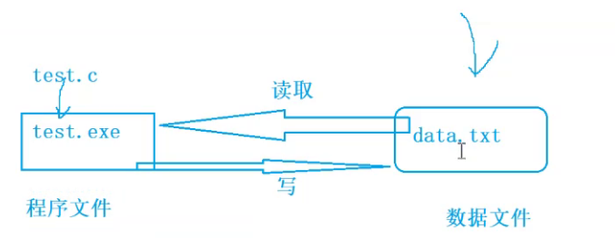
以前各章所处理数据的输入输出都是以终端为对象的，即从终端的键盘输入数据(读)
运行结果显示(打印)到显示器上（写）
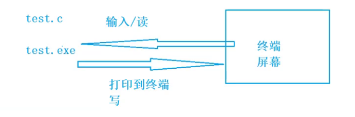
处理磁盘上的文件：
其实有时候我们会把信息输出到磁盘上，当需要的时候再从磁盘上把数据读取到内存中使用
1.2.3文件名
一个文件要有一个唯一的文件标识，以便用户识别和引用
文件名包含3部分：文件路径+文件名主干+文件后缀
例如：c:\code\test.txt
为了方便，文件标识常被称为文件名
1.3 二进制文件和文本文件
根据数据的组织形式（内容），数据文件分为文本文件或二进制文件
二进制文件：
数据在内存中以二进制的形式存储，如果不加转换的输出到外存(硬盘)的文件中
**文本文件：**我们能看懂的
存储前将二进制形式转换成ASCII码形式。最终以 ASCII字符的形式存储的文件。
存储到外存中
字符一律以S=ASCII形式存储，数值型数据既可以用ASCII形式存储，也可以用二进制形式存储
整数10000以二进制形式存储，也就是以整数的形式存储，占4个字节
以字符形式存储，则占5个字节，也就是每个字符占1个字节（字符1的ASCII值为49）
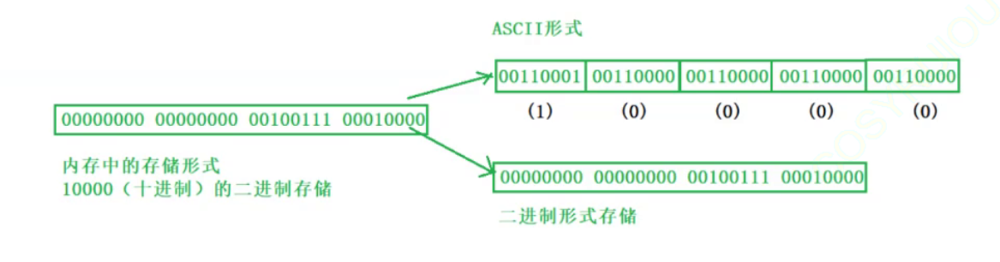
2.文件的打开和关闭
2.1 流
我们程序的数据需要输出到各种外部设备，也需要从外部设备获取数据
但不同的外部设备的输入输出操作各不相同
C程序针对文件、画面、键盘等的数据输入输出操作都是通过流操作的
1）打开流
2）读/写
3）关闭流
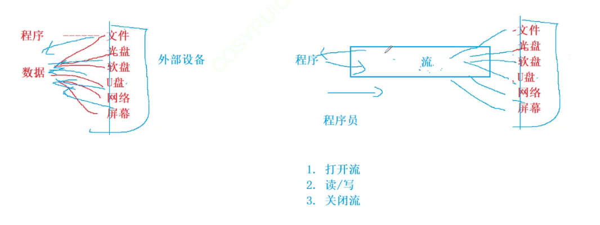
2.1.2 标准流
从键盘输入
输出到屏幕
键盘和屏幕都是外部设备
键盘-标准输入设备 -stdin
屏幕-标准输出设备 -stdout
是一个程序默认打开的两个流设备
scanf — 从键盘上读取数据
printf — 把数据写到屏幕上
这样的操作并没有打开流
原因：C语言程序在启动的时候，就默认打开了三个流：
- **stdin:**标准输入流，在大多数环境中从键盘输入，scanf函数就是从标准输入流中读取数据
- **stdout:**标准输出流，在大多数环境中从键盘输出至显示器界面，printf函数就是将信息输出到标准输出流中
- **stderr：**标准错误流：在大多数环境中输出到显示器界面
stdin、stdout、stderr三个流的类型 是FILE*，通常称为文件指针类型
C语言中就是通过FILE*的文件指针来维护流的各种操作的
2.2 文件指针
缓冲文件系统中，关键的概念是“文件类型指针”，简称“文件指针”
每个被使用的文件都在内存中开辟了一个相应的文件信息区，用来存放文件的相关信息
（如文件名，文件状态及文件当前的位置等）这些信息是保存在一个结构体变量中的
该结构体类型是由系统声明的，取名FILE
每当打开一个文件的时候，系统会根据文件的情况自动创建一个FILE结构的变量，并填充其中的
信息。一般都是通过FILE的指针来维护这个FILE结构的变量
通过文件指针变量能够间接找到与它关联的文件
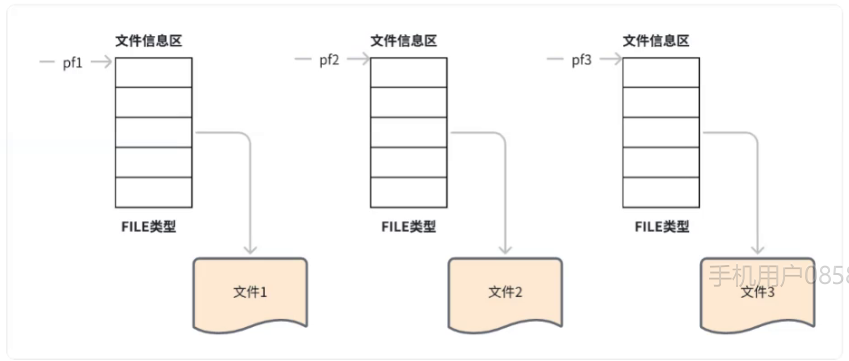
2.3 文件的打开和关闭
文件的操作
1.打开文件 – 打开流
2.读写文件 – 读/写流
3.关闭文件 – 关闭流
ANSI C规定 fopen函数来打开文件，fclose关闭文件
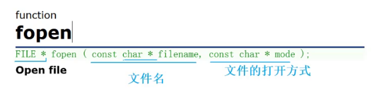
- filename：文件名
- mode：文件的打开方式
- 函数最终返回FILE*的指针
写的时候会自己创建新文件，读的时候不会
“r”如果指定文件不存在，出错
“w”如果指定文件不存在，会新建一个文件；如果指定文件存在，会先清空文件里的内容
|
|
程序是在内存中的，文件是在硬盘上的
输入/读：把文件里的数据拿到，放到内存中
输出/写：把内存中的数据写到文件/硬盘上
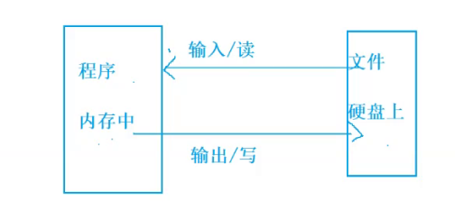
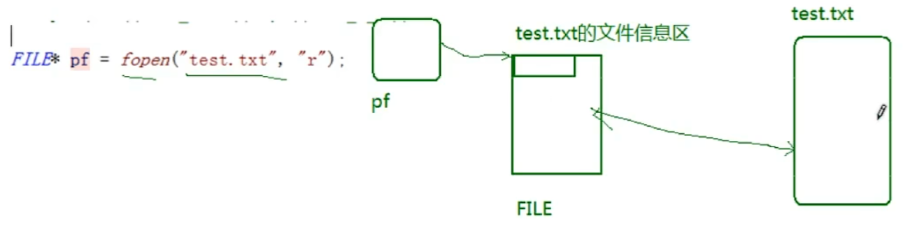
3 文件的读和写
3.1 文件的顺序读写
3.1.1顺序读写函数介绍
我们可以向文件里写点东西进去，也可以从文件中获取一些信息出来
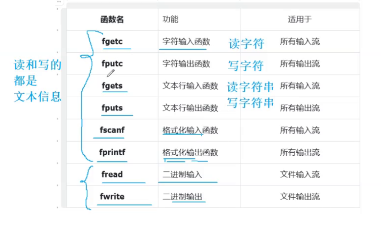
3.1.2 fputc 和 fgetc
fputc 写字符
fputc：向stream这个文件指针指向的文件里写字符
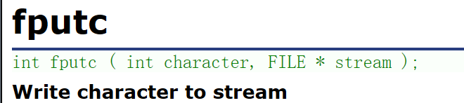
- 第一个参数：要写的字符
- 第二个参数：向哪个文件流里面写
|
|
fgetc 读字符
fgetc 从流里面获取一个字符
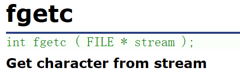
- 参数：从哪个文件流里面读
- 返回值：
- 如果成功，就返回读到的那个字符的ASCII码值
- 如果读取失败，就返回EOF
EOF（end of file） 是文件的结束标志
|
|
操作屏幕和键盘
从键盘输入、输出到屏幕
键盘 和 屏幕都是外部设备
- 键盘-标准输入设备-stdin
- 屏幕-标准输出设备-stdout
是一个程序默认打开的两个流设备
stdin – 标准输入流
读的形式打开文件 – 得到的是文件的输入流
stdout -标准输出流
写的形式打开文件 – 得到的是文件的输出流
|
|
3.1.4 fputs 和 fgets
fgets 读字符串
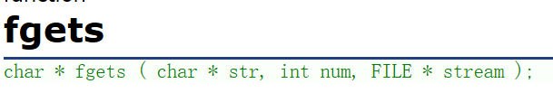
- 第一个参数：将读取的信息存放到字符数组中
- 第二个参数：最多读取多少个字符
- 第三个参数：从哪个文件流里读取
- 返回值：读取成功，返回目标空间起始地址，str；读取失败，返回NULL
fgets：从FILE*指向的流里面读num个字符，存放到字符数组str中
细节：
- 实际上只会写num-1个字符，并在后面添\0
- 如果遇到换行符，就不会往下读了，直接在换行符\n后面添\0
|
|
补充：
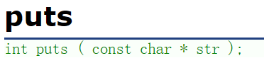
puts，打印（写）一个字符串到屏幕（标准输出）上，默认打印完信息后会换行
fputs 写字符串
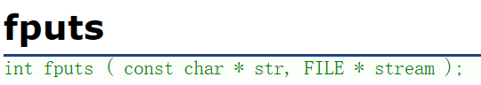
- 第一个参数：要写的字符串
- 第二个参数：写到哪个流里面去
- 返回值：
- 如果成功，返回一个非负整数；
- 如果失败，返回EOF，并设置错误码
fputs：写一个字符串到流里面
细节：写字符串到文件的时候，不会把字符串隐含的\0写进去，如果要换行的话，需要自己手动加
\n
操作文件
|
|
操作屏幕和键盘
|
|
3.1.5fscanf 和 fprintf
可以认为fprintf和fscanf包含了printf和scanf的功能
fscanf 格式化输入
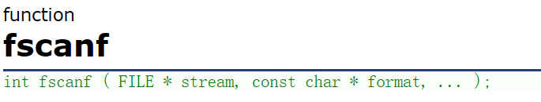
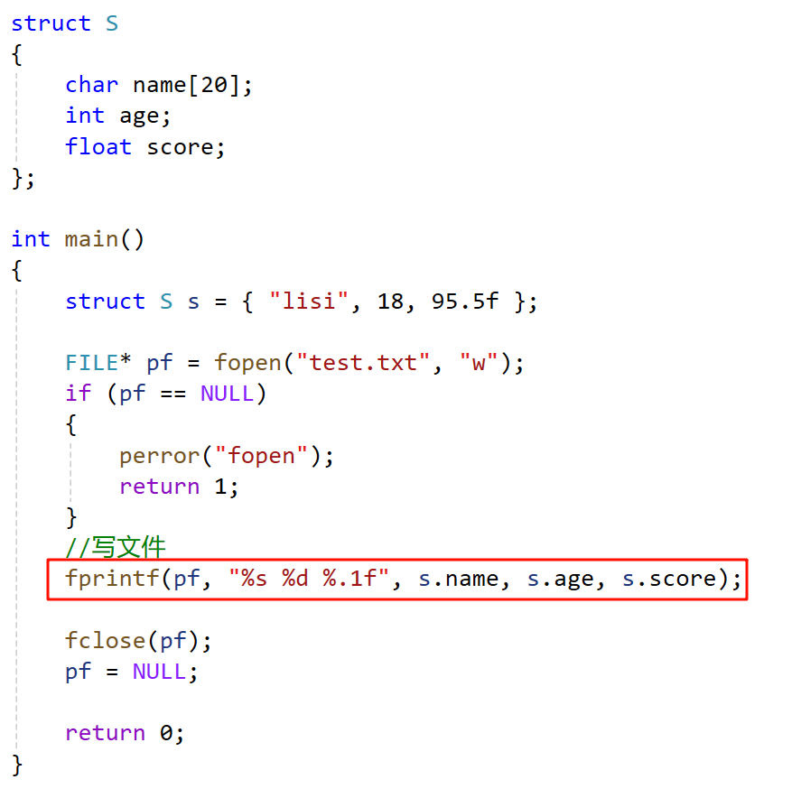
fprintf 格式化输出
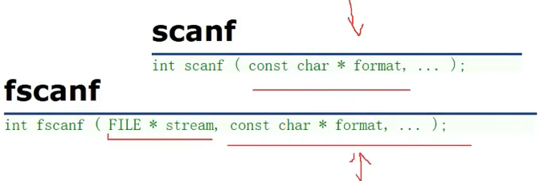
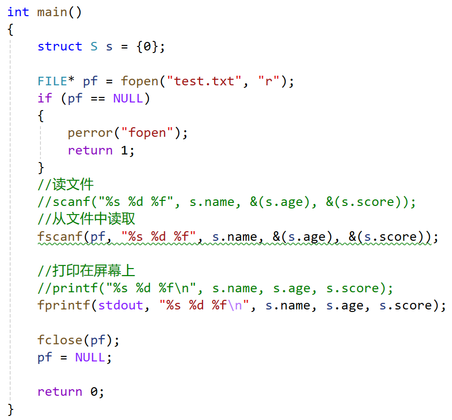
scanf/printf针对标准输入流/标准输出流的格式化输入/输出函数
fscanf/fprintf针对所有输入流/输出流的格式化输入/输出函数
sprintf是将格式化的数据写到字符串中，可以理解为将格式化的数据转换成字符串
sscanf是从字符串中读取格式化的数据
补充：sprintf和sscanf
sprintf
sprintf是将格式化的数据写到字符串中，可以理解为将格式化的数据转换成字符串
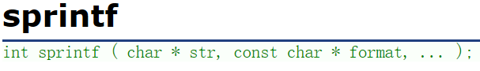
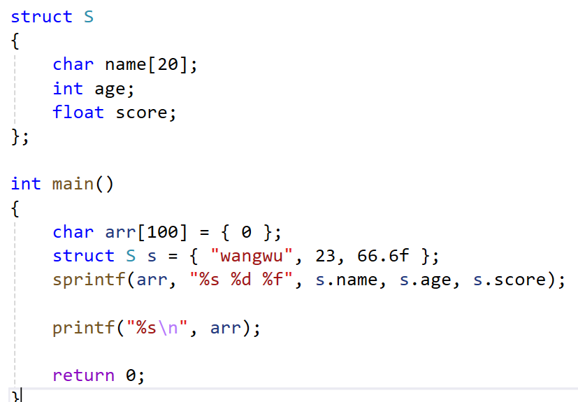
sscanf
sscanf是从字符串中读取格式化的数据
也可以理解为：将字符串转成格式化的数据
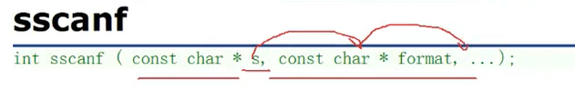
注意取地址
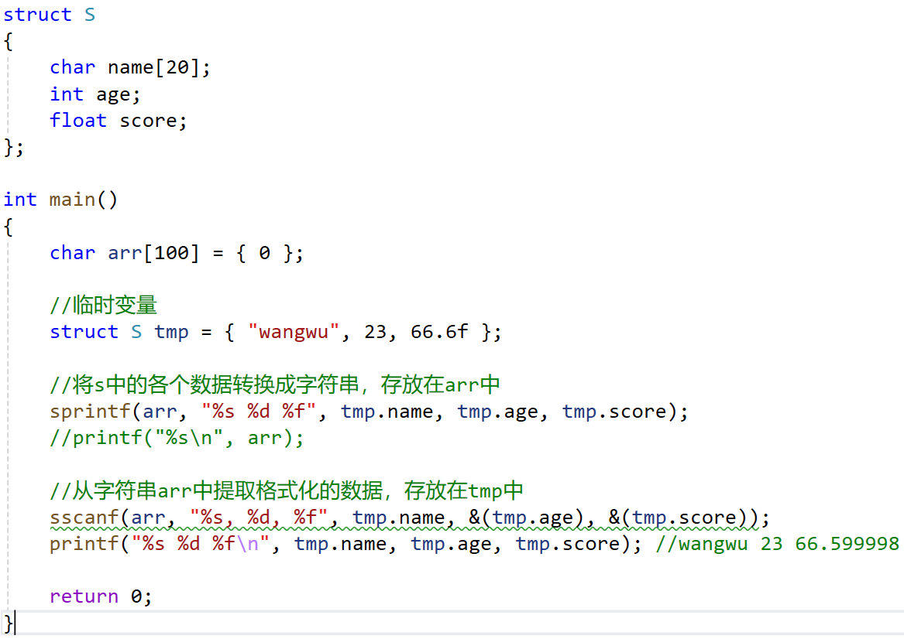
3.1.6fwrite 和 fread
fwrite二进制输出
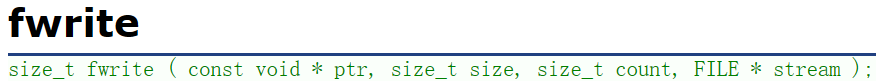
把ptr指向空间里，count个大小为size的数据，写到流里面
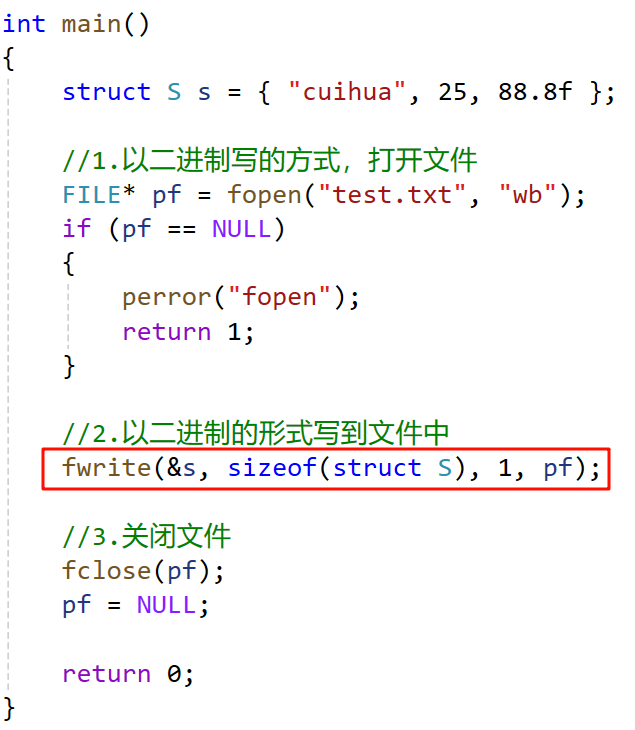
fread二进制输入
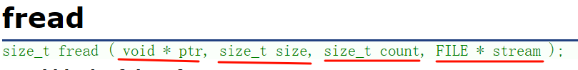
从流里面读取count个，大小为size的数据，放到ptr指向的空间
返回成功读取的大小为size的元素个数
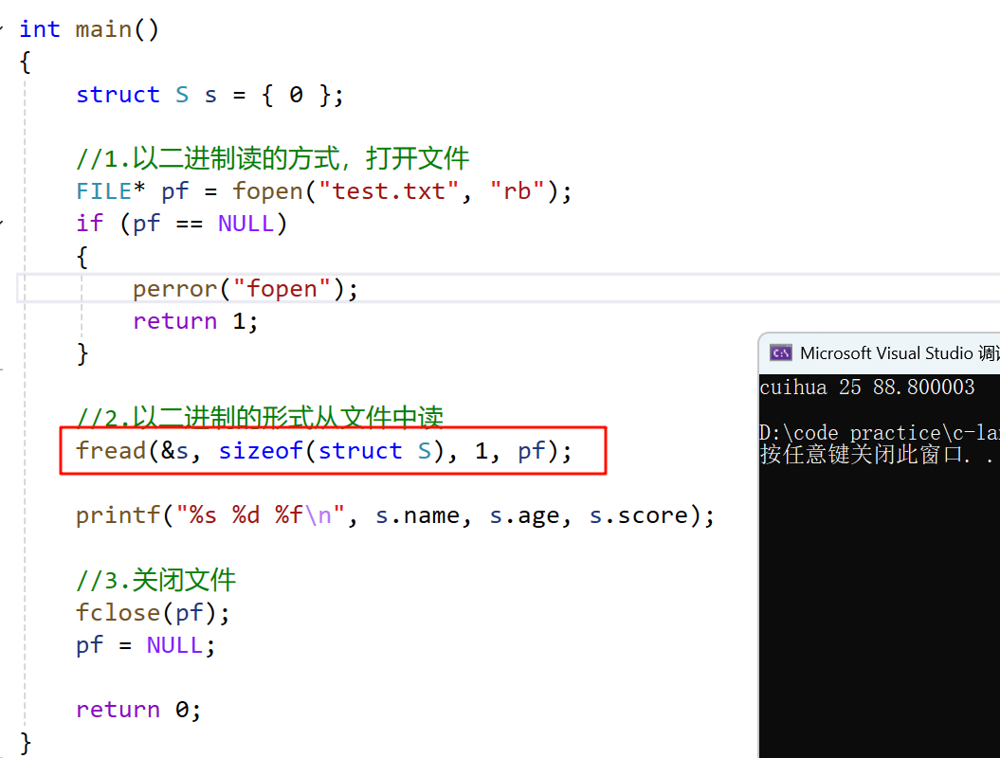
3.2 文件的随机读写
fseek
根据文件指针的位置和偏移量来定位文件指针（文件内容的光标）
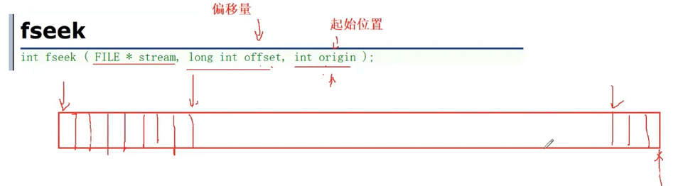
offsetof – 计算结构体成员相较于起始位置的偏移量
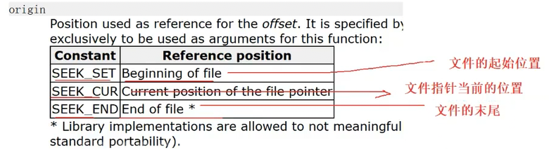
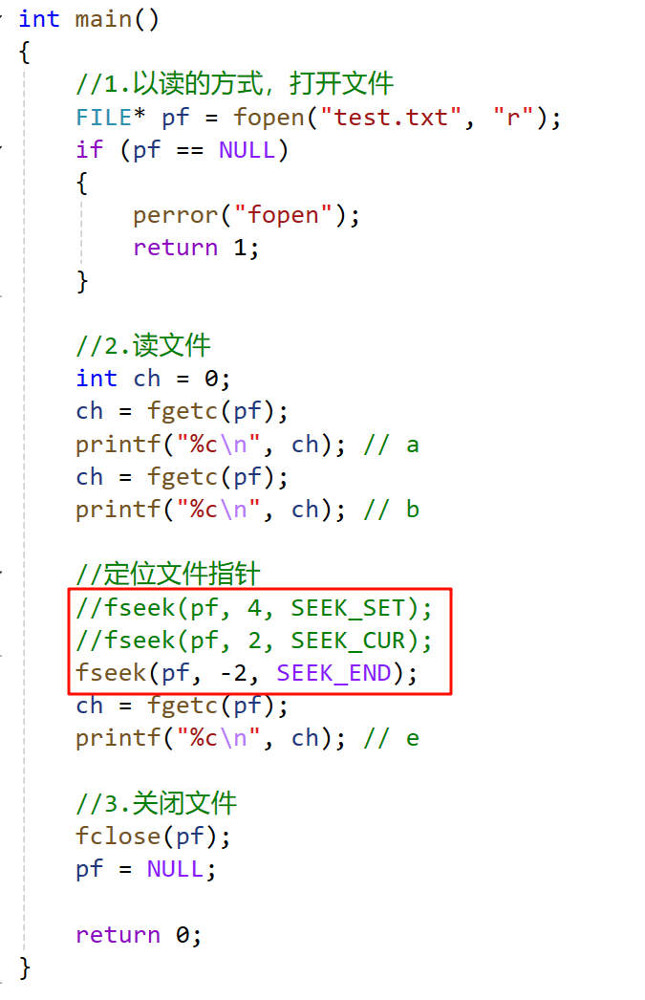
ftell
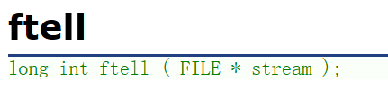
返回文件指针相对于起始位置的偏移量
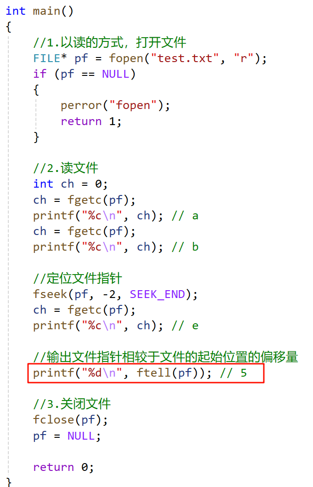
rewind
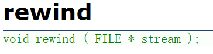
让文件指针的位置回到文件的起始位置
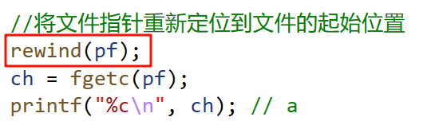
3.3 文件读取结束的判定
EOF – end of file 文件结束标志
在读取文件的过程中，有可能读取文件结束
结束的原因：
1.遇到文件末尾
2.遇到错误了
用ferror函数来检测文件是不是因为遇到某些错误才结束的，返回非0值表示是
用feof函数是来检测文件是不是遇到文件末尾/结束标志了才结束的，返回非0值表示是
那怎么判断文件是不是读取结束了呢？
1.对于文本文件
使用fgetc就判断返回值是否是EOF ，不管是读取失败还是遇到文件结束，都会返回EOF
使用fgets就判断返回值是否是NULL
2.对于二进制文件
判断返回值是否小于实际要读取的个数
比如：fread
4.文件缓存区
缓冲文系统
系统自动地在内存中为程序中每一个正在使用的文件开辟一块文件缓冲区
从内存向磁盘输出数据会先送到内存中的缓冲区，装满缓冲区后，才一起
送到磁盘上
如果从磁盘向计算机读入数据，则从磁盘文件中读取数据输入到内存缓冲区
（充满缓冲区），然后再从缓冲区逐个地将数据送到程序数据区（程序变量等）
缓冲区的大小根据C编译系统决定
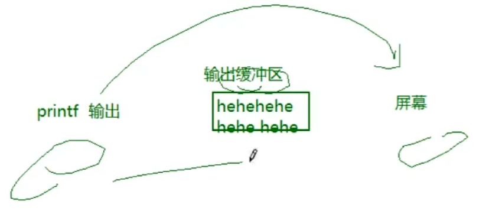
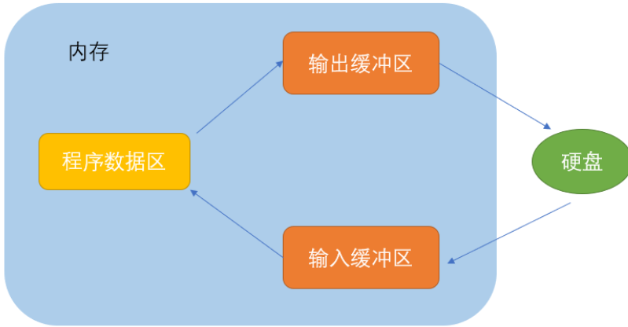
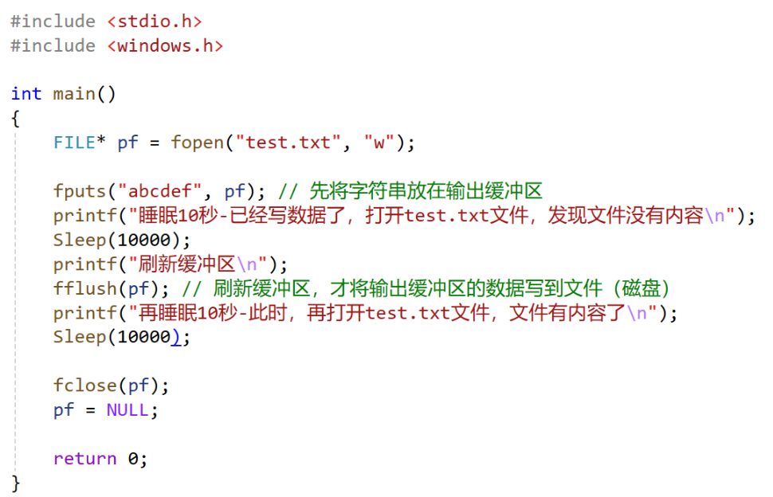
这里可以得出一个结论：
因为有缓冲区的存在，C语言在操作文件的时候，需要做刷新缓冲区或者在文件操作结束的时候关闭文件。
如果不做，可能导致读写文件的问题